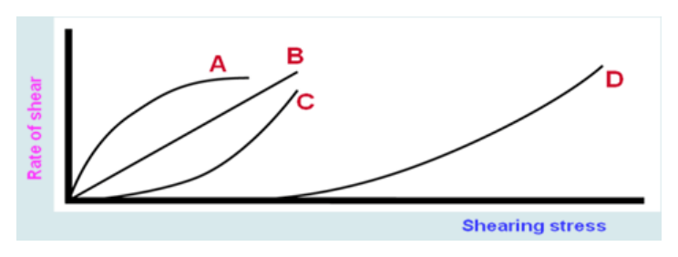

開卷有益 ／
藥師 ／ 藥劑學與生物藥劑學 ／ 101 年第 2 次101 年第 2 次藥師藥劑學與生物藥劑學試題與答案
這一頁是民國 101 年第 2 次藥師藥劑學與生物藥劑學的整份歷屆試題，共 80 題，題目與標準答案出自考選部「國家考試試題及測驗式試題答案」開放資料，其中 71 題附有詳解。以下逐題列出題幹、選項與答案；要計時作答或記錄成績，請用線上練習。
考選部原始場次代碼：101100
線上作答這一科 →
全部 80 題
第 1 題
請問下列何者體積最大？
（A） 1 L（B） 150 pint（C） 0.5 gallon（D） 50 tablespoonfuls答案：（B）
詳解與考點 正解：比較前須統一體積單位。以常用美制換算，1 pint 約為 473 mL，故 150 pint = 150 × 473 mL = 70,950 mL = 70.95 L；其量遠大於其他選項，故選 B。
A：1 L = 1,000 mL，遠小於 70,950 mL。
C：0.5 gallon 約為 0.5 × 3.78 L = 1.89 L，仍遠小於 150 pint。
D：1 tablespoonful = 15 mL，故 50 tablespoonfuls = 50 × 15 mL = 750 mL = 0.75 L，也不是最大。
本題考點：體積單位換算（volume conversion）——混合單位比較時，先全部換成 mL 或 L 再排序；藥局常用體積（pharmaceutical household measures）——tablespoonful 與 pint、gallon 同題時，要以乘法逐步取得可比較的體積。
第 2 題
依藥典規定，用振搖法（１）製備芳香水劑100 mL時，應取多少公克揮發油或揮發性物質溶於蒸餾水中？
（A） 0.1（B） 0.2（C） 1（D） 2答案：（B）
詳解與考點 正解：藥典振搖法的規格是揮發油或揮發性物質 2 g 加蒸餾水製成 1000 mL（即 0.2% w/v）；製備 100 mL 須依終體積按比例縮為十分之一，2 g × 100/1000 = 0.2 g，故選 B。
A：0.1 g 只有規定用量 0.2 g 的一半，無法符合 100 mL 製備時 0.2% w/v 的指定濃度。
C：1 g 是規定用量的 5 倍，會使揮發性成分比例過高。
D：2 g 是規定用量的 10 倍，同樣不符合題目指定的振搖法規格。
本題考點：芳香水劑（aromatic water）——看到指定終體積與振搖法時，直接套用該規格的揮發性成分用量；振搖法（agitation method）——此法是將揮發性成分在水中振搖分散，判斷時要先固定終體積再核對重量。
第 3 題
下列有關糖漿劑之敘述，何者錯誤？
（A） 蔗糖會造成果膠（pectin）的脫水而凝膠化（B） 氫碘酸糖漿係以蔗糖溶於稀碘酸與水之混合液中製成（C） 碘化亞鐵糖漿中可加入檸檬酸當安定劑（D） 吐魯香膠糖漿中可加入碳酸鎂以助其樹脂成分之溶解答案：（B）
詳解與考點 正解：氫碘酸糖漿應使用稀氫碘酸配製；（B）寫成稀碘酸，將 hydroiodic acid 與 iodic acid 混為不同酸類，敘述錯誤，故選 B。
A：蔗糖可使果膠脫水並促進凝膠形成，這是糖漿與果膠系統的正確現象，故不是答案。
C：碘化亞鐵糖漿可加入檸檬酸作為安定劑，目的在維持製劑穩定，敘述正確，故不是答案。
D：吐魯香膠糖漿可利用碳酸鎂協助樹脂成分處理與分散，敘述正確，故不是答案。
本題考點：酸類名稱辨識（hydroiodic acid versus iodic acid）——氫碘酸與碘酸雖字形相近，配方題須依酸的化學身分判斷；糖漿劑配方（syrup formulation）——判別選項時，分開檢查凝膠、安定與樹脂助處理等各自的配方角色。
第 4 題
下列有關於「流浸膏劑」特性之敘述，何者正確？
（A） 欲製備100毫升之甘草流浸膏時，應取用10克之新鮮甘草來滲漉抽提（B） 法定製備方法有四種，若以沸水為浸溶劑時，於濃縮滲出液中加乙醇作為助溶劑（C） 其外形可分為三種，即半流體狀，軟塊狀或固體狀，粉狀（D） 法定之流浸膏劑，均係以滲漉法製備之答案：（D）
詳解與考點 正解：法定流浸膏劑以滲漉法製備，這正是（D）所述的共同特性，故選 D。
A：流浸膏劑的基準為 1 mL 製劑相當於 1 g 乾燥生藥的有效成分；100 mL 不會只以 10 g 新鮮甘草作為對應原料。
B：以沸水為浸溶劑的法定製法中，於濃縮滲出液加入乙醇的角色是防腐劑（preservative），用以抑制微生物滋長，並非（B）所稱的助溶劑；把乙醇的作用寫成助溶即為本敘述可驗證的錯點。
C：半流體、軟塊或固體粉狀是浸膏類外觀的分類，不是流浸膏劑作為液體製劑的特性。
本題考點：流浸膏劑（fluidextracts）——先以液體製劑及 1 mL 對應 1 g 乾燥生藥的濃度概念判斷；滲漉法（percolation）——法定流浸膏題目出現製備方法時，要將其與一般浸膏的外觀分類分開處理。
第 5 題
在常溫常壓下，下列化合物溶解度之比較，何者正確？
（A） 於水中，atropine＞atropine sulfate（B） 於酒精中，atropine＞atropine sulfate（C） 於水中，benzoic acid＞benzyl alcohol（D） 於水中，carbon tetrachloride＞chloroform答案：（B）
詳解與考點 正解：Atropine 為游離鹼，在酒精中的溶解性高於離子型的 atropine sulfate；因此（B）的比較正確，故選 B。
A：在水中應是 atropine sulfate 的離子型較 atropine 易溶，方向與選項相反。
C：常溫水中 benzyl alcohol 的溶解性高於 benzoic acid；benzoic acid 受晶格與疏水芳香環影響，不能寫成較易溶。
D：Chloroform 比 carbon tetrachloride 具較高極性，在水中的溶解度也較高，故選項的比較方向錯誤。
本題考點：鹽類與游離鹼溶解度（salt versus free-base solubility）——比較水與酒精時，要先判斷化合物是否帶電及溶媒極性；晶格能與溶媒化（lattice energy and solvation）——固體酸類的晶格效應會限制水溶解度，不能只因有極性官能基就判為較易溶。
第 6 題
就藥學所用之溶劑而言，下列敘述何者較正確？
（A） 稀乙醇（diluted alcohol）之製備係將酒精與等體積水稀釋而得，故其中乙醇之含量約為49%v/v（B） 就成藥（OTC drugs） 而言，供小於6歲以下兒童服用之口服製劑，其乙醇含量不宜超過5%（C） 依藥典中對於純淨水之規定，其總固體含量每100 mL應少於0.1 mg（D） 丙二醇不宜使用於口服液體製劑答案：（A）
詳解與考點 正解：稀乙醇的製備關鍵是酒精與水混合後發生體積收縮。將酒精與等體積水混合，成品乙醇濃度約為49% v/v，因此（A）符合稀乙醇的製備概念，故選 A。
B：供小於 6 歲兒童服用的口服 OTC 製劑，乙醇含量上限為 0.5%；5% 是 6 至 12 歲的限值（12 歲以上為 10%），（B）把年齡層對應的限度套錯。
C：藥典規定純淨水的總固體每 100 mL 不得超過 1 mg；（C）所稱每 100 mL 少於 0.1 mg 少了一個數量級，此數值與藥典規格不符。
D：丙二醇可作口服液體製劑的共溶媒或保濕劑，實際用量需依製劑與使用族群評估，不能概括為不宜使用。
本題考點：稀乙醇（diluted alcohol）——判斷醇水製劑時要考慮混合後的體積收縮，不能只把兩個體積直接相加；口服共溶媒（oral cosolvent）——丙二醇可改善難溶性成分的溶解，但兒童等族群須另行評估暴露量；藥典用水（purified water）——遇到總固體等限度時，須以該藥典規格的單位與上限核對。
第 7 題
添加界面活性劑引起懸液劑中的粒子產生凝絮，相較於無添加界面活性劑的該懸液劑，當懸浮粒子沉降 後，則：
（A） 沉降體積會增加（B） 沉降體積會減少（C） 沉降體積不變（D） 沉降粒子會溶解消失答案：（A）
詳解與考點 正解：界面活性劑誘發凝絮後，粒子先形成鬆散的團聚體再共同沉降；此類沉積層孔隙較多，所以沉降體積增加，也較容易重新分散，故選 A。
B：凝絮沉積不是緻密堆積；沉降體積減少較符合未凝絮粒子形成緊密沉積或結塊的情形。
C：界面活性劑已改變粒子間的聚集狀態，沉降後的體積不會維持原來不變。
D：凝絮是粒子間的可逆聚集，不是粒子溶解成分子的過程。
本題考點：凝絮化懸液（flocculated suspension）——看到鬆散團聚與易再分散時，判定沉降體積較大；結塊（caking）——緻密且難再分散的沉積通常源於未凝絮粒子，不可與凝絮混為一談。
第 8 題
由容器中倒出水與篦麻油時，水的流速比篦麻油快1000倍，則水對篦麻油的黏滯係數比值為：
（A） 1000（B） 10（C） 0.1（D） 0.001答案：（D）
詳解與考點 正解：在同一容器與受力下，倒出流速與黏滯係數成反比。q水/q篦麻油 = 1000 = η篦麻油/η水，因此 η水/η篦麻油 = 1/1000 = 0.001，故選 D。
A：1000是篦麻油對水的黏滯係數比值，將比較方向倒過來了。
B：10只表示十倍差異，未反映題目給定的1000倍流速差。
C：0.1只表示水的黏滯係數為篦麻油的十分之一，仍少了一個數量級。
本題考點：牛頓流體流動與黏度（viscosity）——在幾何條件與外力相同時，流速與黏滯係數呈反比；比值換向——由流速比換成黏度比時要先取倒數，再檢查比較的分子與分母是否與題目一致。
第 9 題
下列何種液體具搖變性？
（A） 生理鹽水（B） 含5% V/V紅血球之生理鹽水（C） 皂土水懸液（D） 乙酸維生素A酯溶於棉子油答案：（C）
詳解與考點 正解：皂土水懸液的片狀粒子可在靜置時形成網狀結構，受剪切時結構暫時破壞而黏度下降，靜置後又回復，符合搖變性，故選 C。
A：生理鹽水是均相的低分子溶液，黏度通常不隨受剪切時間而產生可逆變化。
B：含紅血球代表分散系，但僅有紅血球存在不足以判定具有受剪切破壞、靜置重建的搖變環。
D：乙酸維生素A酯溶於棉子油為分子溶液，沒有皂土懸液般可重建的粒子網狀結構。
本題考點：搖變性（thixotropy）——判斷時要同時看到受剪切後黏度下降與靜置後回復，不能只看是否為分散系；皂土懸液（bentonite suspension）——片狀黏土粒子形成可逆網狀結構時，是搖變性製劑的典型例子。
第 10 題
非離子界面活性劑溶液加熱至某一特定溫度時會因沉澱而呈混濁，此溫度稱為曇點，下列敘述何者正確？
（A） 曇點會隨濃度上升而上升（B） 曇點會隨濃度上升而下降（C） 曇點會隨分子中ethylene oxide單元增加而上升（D） 曇點會隨分子中碳氫之鏈長增加而上升答案：（C）
詳解與考點 正解：非離子界面活性劑的曇點取決於聚氧乙烯鏈在水中的水合程度。ethylene oxide 單元增加會提高親水性，使加熱脫水與相分離要到較高溫才發生，因此（C）正確，故選 C。
A、B：兩者都把濃度上升分別斷定為必然升高或降低曇點。濃度效應會受配方組成影響，不能取代親水性所決定的構效關係。
D：碳氫鏈較長會提高疏水性，通常使相分離較早發生，方向不是曇點上升。
本題考點：曇點（cloud point）——加熱非離子界面活性劑溶液出現混濁時，判斷重點是聚氧乙烯鏈的水合是否容易維持；親水親油平衡（hydrophilic-lipophilic balance）——增加 ethylene oxide 單元會提高親水性並提高曇點，延長碳氫鏈則往相反方向判斷。
第 11 題
Shear-thinning liquid係指：
（A） 黏滯性會隨切變速率增加而增加（B） 黏滯性會隨切變速率增加而減少（C） 黏滯性會隨切變速率減少而增加（D） 黏滯性不會隨切變速率增加而改變答案：（B）
詳解與考點 正解：shear-thinning（剪切變稀）的定義式表述是切變速率增加時表觀黏度下降，（B）即此定義的標準寫法，故選 B。
A：黏度隨切變速率增加而上升是 shear-thickening 或 dilatant 行為，方向與 shear-thinning 相反。
C：切變速率減少而黏度增加，描述的是同一單調關係，只是把自變數的方向反轉；shear-thinning 一詞的定義是以切變速率增加為基準敘述黏度變化，標準表述因而寫成（B）。
D：黏度不隨切變速率改變是牛頓流體的特徵，不是 shear-thinning。
本題考點：剪切變稀（shear-thinning）——以表觀黏度對切變速率作圖時，切變速率增加、黏度下降即成立；剪切增稠（shear-thickening）——切變速率增加、黏度上升才屬相反的流變行為；術語定義的基準方向（definitional reference direction）——同一關係要以定義所取的自變數方向來表述。
第 12 題
依據Stokes'方程式測得同材質兩球形粉體在密度為1.25 g/mL黏稠度400 cp之甘油中的沉降速率分別是 4.25×10-8 cm/sec與4.25×10-10 cm/sec，則後者的平均粒徑是前者的多少倍？
（A） 100（B） 10（C） 0.1（D） 0.01答案：（C）
詳解與考點 正解：同材質球形粒子在同一介質中依 Stokes 方程式沉降時，沉降速率 v 與粒徑 d 的平方成正比，即 v ∝ d²。先取速率比：v後/v前 = (4.25 × 10^-10 cm/sec)/(4.25 × 10^-8 cm/sec) = 10^-2。再開平方：d後/d前 = √(10^-2) = 10^-1 = 0.1，因此後者平均粒徑為前者的0.1倍，故選 C。
A：100同時將前後順序倒置，且把速率比直接當成粒徑比。
B：10是對速率比開平方後再倒置的結果，粒徑方向與題目所問相反。
D：0.01直接沿用沉降速率比，漏掉 Stokes 方程式中的平方關係。
本題考點：Stokes 沉降方程式（Stokes' law）——材質與介質相同時，沉降速率比等於粒徑比的平方；平方根換算——由速率反推粒徑時必須開平方，不能把兩個比值直接視為相等。
第 13 題
Cephalexin for oral suspension是屬於何種劑型？
（A） 溶液劑（B） 溶液用乾粉（C） 懸液劑（D） 懸液用乾粉答案：（D）
詳解與考點 正解：「for oral suspension」表示產品先以乾粉供應，使用前加水調製成口服懸液；cephalexin 不需在貯存期間維持為已配製的液體，因此劑型是懸液用乾粉，故選 D。
A：溶液劑中的藥物已完全溶解，與加水後仍有固體分散相的口服懸液不同。
B：溶液用乾粉加水後應形成澄清均相溶液，不能描述 cephalexin for oral suspension 的最終分散狀態。
C：懸液劑是已製成液態懸液的名稱；本品以乾粉供應並在使用前重配，劑型應特別標為懸液用乾粉。
本題考點：懸液用乾粉（powder for oral suspension）——看到 for oral suspension 時，先判斷是否為使用前加水重配的乾粉；劑型與重配後狀態——命名時要區分供應時的乾粉劑型與加水後形成的懸液。
第 14 題
有關sterile epinephrine suspension分散系性質之敘述，下列何者正確？
（A） 具高滲透壓（B） 粒子具布朗運動（C） 粒子會沉降（D） 粒子擴散速度較溶液劑大答案：（C）
詳解與考點 正解：sterile epinephrine suspension 仍是含固體分散相的懸液。藥物粒子與分散媒之間存在密度差，受重力作用會沉降；無菌要求不會改變這項分散系基本性質，故選 C。
A：高滲透壓取決於溶解性溶質與處方調整，並不是懸液粒子必然具有的特性。
B：布朗運動足以明顯對抗重力是極小膠體粒子的情形；懸液粒子通常較大，仍須考慮沉降。
D：依 Stokes-Einstein 關係，粒徑較大的分散粒子擴散較慢，不會比溶液中的分子或離子更快。
本題考點：懸液劑（suspension）——判斷含固體分散相的系統時，先考慮密度差造成的沉降；布朗運動（Brownian motion）——只有粒徑非常小時才足以顯著抵銷重力，不能用來否定一般懸液的沉降。
第 15 題
當水的表面張力是72 dyne/cm，對臨界表面張力是45 dyne/cm的固體形成的接觸角為38度，在水中添加界 面活性劑使水的表面張力變成36 dyne/cm時，則與該固體形成的接觸角為多少度？
（A） 0（B） 30（C） 60（D） 180答案：（A）
詳解與考點 正解：接觸角的判準是液體表面張力與固體臨界表面張力的比較。加入界面活性劑後，水的表面張力由72 dyne/cm降為36 dyne/cm，已低於固體的45 dyne/cm；液體可完全潤濕固體，接觸角為0°，故選 A。
B：30°仍表示部分潤濕，未反映液體表面張力已降至臨界表面張力以下。
C：60°比原先的38°更大，代表潤濕性變差，與加入界面活性劑降低表面張力的方向相反。
D：180°代表完全不潤濕，正好與本題的完全潤濕狀態相反。
本題考點：臨界表面張力（critical surface tension）——液體表面張力低於固體臨界表面張力時，判為完全潤濕，接觸角取0°；接觸角（contact angle）——接觸角愈小表示潤濕性愈好，降低液體表面張力通常使角度下降。
第 16 題
有一液體以受力時之切應力與切變速率作圖為呈現通過原點的直線，今改以切變速率為x軸，黏稠度為y軸 作圖，則圖形為：
（A） 不通過原點斜率為0的直線（B） 不通過原點斜率為大於0的直線（C） 不通過原點斜率為小於0的直線（D） 通過原點的直線答案：（A）
詳解與考點 正解：切應力對切變速率為通過原點的直線，表示此液體符合 τ = η × γ̇，且 η 為常數。改以切變速率為 x 軸、黏稠度為 y 軸時，y = η 是一條斜率為0的水平線；η 不為0，外推時不通過原點，故選 A。
B：正斜率表示黏稠度會隨切變速率增加而增加，屬剪切增稠而非本題的牛頓行為。
C：負斜率表示黏稠度會隨切變速率增加而下降，屬剪切變稀。
D：通過原點代表零切變速率時黏稠度為0，或黏稠度與切變速率成正比，均不符合常黏度液體。
本題考點：牛頓流體（Newtonian fluid）——切應力與切變速率成正比時，黏稠度為常數；流變圖轉換（rheogram conversion）——由 τ 對 γ̇ 圖改成 η 對 γ̇ 圖時，要用 η = τ/γ̇ 判斷水平、正斜率或負斜率。
第 17 題
依下圖流變學之各種曲線，A曲線代表物質何種特性？

（A） Newtonian flow（B） Plastic flow（C） Pseudoplastic flow（D） Dilatant flow答案：（D）
第 18 題
有關acacia添加製備乳劑乾膠法（dry gum method）之描述，下列何者正確？
（A） 油相需一次加入水相中（B） 為油相需慢慢加入水相中（C） Acacia需先加入油相混和（D） 油相：水相：acacia 比例為1：2：4答案：（C）
第 19 題
下列何者最適合於改善一乳劑之合併現象？
（A） 重新搖動（B） 提高溫度（C） 降低顆粒大小（D） 改變乳化劑答案：（D）
詳解與考點 正解：乳劑合併是液滴間界面膜破裂後不可逆地融合，改善重點在重建或強化液滴界面膜。改變乳化劑可調整界面膜的強度與親和性，最直接處理合併原因，故選 D。
A：重新搖動可把乳析或乳霜化時仍分離的液滴再分散，不能把已合併的大液滴還原。
B：提高溫度常使黏度下降並削弱界面膜穩定性，通常不利於處理合併。
C：降低液滴大小有助於預防未來不安定，但已因界面膜失效而合併時，仍須先處理乳化劑的界面作用。
本題考點：乳劑合併（coalescence）——液滴融合後屬不可逆不安定，處理時優先檢查乳化劑與界面膜；乳霜化（creaming）——液滴未融合、只是重力分層時才可藉搖動重新分散。
第 20 題
下列何者在水中，會被活性碳 charcoal 吸附最多？
（A） Formic acid（B） Acetic acid（C） Propionic acid（D） Butyric acid答案：（D）
詳解與考點 正解：在水中比較同系脂肪酸時，碳鏈愈長，分子相對愈疏水，與活性碳表面的親和力愈大。butyric acid 的碳鏈最長，因此吸附最多，故選 D。
A：formic acid 沒有額外烴鏈，親水性相對最高，與活性碳的疏水表面親和力最低。
B：acetic acid 雖比 formic acid 多一個碳，但碳鏈仍短於 butyric acid。
C：propionic acid 的碳鏈長度介於 acetic acid 與 butyric acid 之間，吸附量也不會最高。
本題考點：活性碳吸附（activated charcoal adsorption）——比較同系物時，在其他條件相同下優先以疏水性與碳鏈長度判斷吸附強弱；同系物序列（homologous series）——官能基相同時，碳鏈增加通常使水合傾向下降、對疏水吸附劑的親和力上升。
第 21 題
在固定溫度、濃度與鹽類下，當界面活性劑形成微膠體（micelle）時會形成：
（A） 固定柱狀形之微膠體（B） 固定20微米之微膠體（C） 非固定集合體（D） 非固定大小之微膠體答案：（C）
詳解與考點 正解：界面活性劑超過臨界微膠體濃度後，單體與微膠體間維持可逆的聚集與解離平衡，分子會持續交換，因此微膠體是非固定集合體，故選 C。
A：微膠體的形狀會隨界面活性劑結構與系統條件改變，不能概括為固定柱狀。
B：微膠體沒有固定20 μm的通則，此數值也不是形成微膠體的判別條件。
D：在固定溫度、濃度與鹽類下，系統會有平衡的聚集狀態；定義重點是動態集合，而非任意、無限制地改變大小。
本題考點：微膠體（micelle）——超過臨界微膠體濃度後，以可逆聚集的動態平衡判斷，而非把它視為永久顆粒；臨界微膠體濃度（critical micelle concentration）——比較條件時需固定溫度、濃度與電解質，才可討論聚集狀態。
第 22 題
下列何者非為油包水與水包油乳劑型軟膏基劑（emulsion ointment base）之共同特性？
（A） 成分中有水（B） 會吸收水分（C） 不溶於水（D） 可利用水移除答案：（D）
詳解與考點 正解：水包油與油包水乳劑型軟膏基劑都含有油、水與乳化系統，但外相不同。水可洗除是水包油基劑的特性；油包水基劑的外相為油，對水較具抵抗性，故不是兩者共同特性，故選 D。
A：兩種乳劑型基劑都含有水，只是水分別位於內相或外相。
B：兩者都有乳化系統而可吸收或容納額外水分，但可容納量會因外相與處方不同。
C：乳劑是分散系而不是分子真正溶解的溶液；水包油基劑可被水洗除，並不等於在水中分子級溶解。
本題考點：乳劑型軟膏基劑（emulsion ointment base）——比較共同性時先分開看是否含水、是否為分散系與可吸水性；外相（external phase）——判斷能否用水移除時，看連續相是水包油的水相還是油包水的油相。
第 23 題
構成皮膚最主要的滲透障壁為？
（A） 角質層（B） 表皮層（C） 真皮層（D） 皮下組織答案：（A）
詳解與考點 正解：經皮吸收時，最主要的擴散阻力來自角質層緻密的角質細胞與細胞間脂質排列；它位於皮膚最外側，構成主要滲透障壁，故選 A。
B：表皮層包含角質層，但範圍較廣；問最主要障壁時應選出實際主導擴散阻力的角質層。
C：真皮層位於角質層之下，血流雖影響吸收後的分布，卻不是藥物進入皮膚時的主要初始障壁。
D：皮下組織更深，藥物必須先跨越角質層與表皮才會到達，不是首要滲透限制。
本題考點：角質層（stratum corneum）——判斷經皮藥物吸收的速率限制步驟時，優先考慮最外層的脂質屏障；經皮滲透（transdermal permeation）——解題時要區分進入皮膚前的障壁與進入真皮後的血流分布。
第 24 題
有A（mp 90℃），B（mp 80℃），C（mp 70℃），D（mp 60℃）4種成分，無法直接研合均勻，且D對 熱較不安定，下列何種製法最佳？
（A） 加熱A至熔化，攪拌冷卻過程中逐步加入B，C，D（B） 加熱D至熔化，攪拌加熱過程中逐步加入C，B，A（C） A，B，C，D混在一起加熱到全熔（D） 四種成分各別熔化再混合答案：（A）
詳解與考點 正解：熔合法要讓所有成分在足以混合的最低熱負荷下接觸。先熔化熔點90℃的 A，冷卻攪拌過程依序加入 B、C、D，可使對熱較不安定的 D 最晚接觸熱，故選 A。
B：先熔化 D 後還要繼續加熱以混入較高熔點成分，會使熱不安定的 D 承受最長且最高的熱暴露。
C：四種成分一同加熱至全熔，必須至少達 A 的熔點，D 因而不必要地長時間受熱。
D：各別熔化仍須先使 D 受熱，且分別熔融後再混合沒有降低 D 的熱暴露。
本題考點：熔合法（fusion method）——多成分基劑應先熔高熔點成分，再於冷卻時依熔點由高到低加入；熱敏感成分（heat-labile ingredient）——看到對熱不安定的成分時，要安排最後加入並縮短受熱時間。
第 25 題
下列何者可作為助懸劑（suspending agent）及親水性稠化劑（hydrophilic thickener）？
（A） Benzalkonium chloride（B） Methylparaben（C） Polysorbate 80（D） Sodium bentonite答案：（D）
詳解與考點 正解：sodium bentonite 是可在水中膨潤的黏土，能提高連續相黏度並形成有助維持粒子分散的結構，因此可同時作為助懸劑與親水性稠化劑，故選 D。
A：benzalkonium chloride 主要是陽離子界面活性劑與防腐劑，不是用來建立懸液黏度的親水性稠化劑。
B：methylparaben 的主要用途是防腐，不具有顯著助懸或稠化功能。
C：polysorbate 80 是非離子界面活性劑，可改善潤濕與分散，但不以提高水相黏度作為主要作用。
本題考點：助懸劑（suspending agent）——選擇時看其能否提高連續相黏度或形成結構網，以減慢粒子沉降；親水性稠化劑（hydrophilic thickener）——能在水相膨潤並增稠的材料可兼顧流變調整與懸液穩定。
第 26 題
下列何種鹽類和stearic acid 所製成的乳劑會比較雪白，但比較容易產生顆粒感？
（A） 硼酸鈉（sodium borate）（B） 氫氧化鈉（sodium hydroxide）（C） 三乙醇胺（triethanolamine）（D） 碳酸鈉（sodium carbonate）答案：（A）
詳解與考點 正解：關鍵在 stearic acid 與不同鹼性鹽形成乳化皂後的外觀與觸感差異。（A）sodium borate 屬弱鹼，中和 stearic acid 後只生成少量硬脂酸皂，皂化不完全，未皂化的 stearic acid 以細微結晶留在系統中並散射光線，使乳劑外觀較雪白，質地卻較易出現顆粒感；相對地 triethanolamine 與 stearic acid 形成的胺鹽型皂界面膜較連續，質地平滑。此一組合正符合題述，故選 A。
B：sodium hydroxide 與 stearic acid 形成 sodium stearate，可作為陰離子型乳化劑；其特徵不是題目所問的「較雪白且較易有顆粒感」。
C：triethanolamine 與 stearic acid 形成 triethanolamine stearate，常用於較平滑的 O/W cream；分辨關鍵在胺鹽與 borate 鹽造成的觸感不同。
D：sodium carbonate 也能提供鹼性以中和 stearic acid，但不是此一白色外觀伴隨顆粒感的典型組合。
本題考點：脂肪酸皂乳化（fatty-acid soap emulsification）——判斷 stearic acid cream 時，先看加入的鹼性成分會形成何種皂類乳化劑；乳劑感官性質（emulsion organoleptic properties）——外觀白度與顆粒感要一起比對，不能只用是否能乳化作判斷。
第 27 題
下列何者最常作為陰道栓劑之基劑？
（A） 可可脂（B） 聚乙二醇（C） 氫化脂肪酸（D） 氫化植物油答案：（B）
詳解與考點 正解：陰道栓劑的基劑須能在陰道分泌液中釋放藥物；（B）聚乙二醇（polyethylene glycol；PEG）為水溶性基劑，會逐步溶解而釋放藥物，是最常用的選擇，故選 B。
A：可可脂為脂肪性基劑，主要靠體溫熔融釋放；雖可用於栓劑，但不是本題所問陰道栓劑最常用的基劑。
C：氫化脂肪酸同屬脂肪性基劑，熔融後可能有油性滲漏，與 PEG 的水溶性釋放方式不同。
D：氫化植物油也是脂肪性基劑，不能取代（B）PEG 在陰道分泌液中溶解釋放的特性。
本題考點：水溶性栓劑基劑（water-soluble suppository base）——陰道給藥時，需在分泌液中溶解的製劑優先考慮 PEG；脂肪性栓劑基劑（fatty suppository base）——可可脂與氫化油主要靠熔融釋放，遇到局部滲液少或有滲漏顧慮時要另行判斷。
第 28 題
一位十多歲男孩癲癇發作，使用diazepam之可可脂栓劑控制不良，發現原因為diazepam之高脂溶性，致使 藥物釋出過慢，建議更換基劑，下列何者為佳？
（A） Fattibase（B） Wecobee基劑（C） Witepsol基劑（D） Carbowax基劑答案：（D）
詳解與考點 正解：diazepam 的高脂溶性使其容易留在可可脂這種脂肪性基劑中，難以分配到直腸液而釋出。（D）Carbowax 為 PEG 類水溶性基劑，可藉基劑溶解改善高脂溶性藥物的釋放，故選 D。
A：Fattibase 為脂肪性栓劑基劑，高脂溶性 diazepam 仍容易偏留於基劑，無法解決釋出過慢的問題。
B：Wecobee 基劑屬硬脂肪性基劑，與可可脂同樣以熔融為主，藥物分配的方向未改變。
C：Witepsol 基劑也屬脂肪性基劑；其熔融性雖可調整，但不如水溶性 PEG 基劑能改善本題的分配限制。
本題考點：藥物－基劑分配（drug-base partitioning）——脂溶性藥物置於脂肪性基劑時，先警覺藥物可能滯留於基劑而延遲釋放；水溶性栓劑基劑（water-soluble suppository base）——遇到脂溶性藥物由脂肪基劑釋出不佳時，可考慮 PEG 類基劑。
第 29 題
下列就「軟膏基劑」之敘述，何者錯誤？
（A） 藥典收載之軟石蠟通常呈黃色至淡琥珀色（B） 於常溫下，黃軟膏之稠度通常稍大於黃軟石蠟（C） 軟石蠟通常為不易親水之基劑（D） 吸收性基劑實質上皆含有約10% 以上之水量答案：（D）
詳解與考點 正解：本題要求找出錯誤敘述，關鍵在吸收性基劑不必然已含有水。（D）吸收性基劑可分為無水型與已含水型；無水型的用途正是吸收水相，因此不能說全部都含約 10% 以上的水量，故選 D。
A：藥典收載的軟石蠟可呈黃色至淡琥珀色，這是黃軟石蠟常見的外觀描述，敘述正確。
B：黃軟膏含有黃蠟，黃蠟使基劑的結構較黃軟石蠟緊實，常溫稠度稍大，敘述正確。
C：軟石蠟為烴類基劑，不易與水混合或吸收水分，屬不易親水的基劑，敘述正確。
本題考點：吸收性軟膏基劑（absorption ointment base）——先分辨無水型能否吸收水相，不能把「可吸水」誤作「原本已含水」；烴類軟膏基劑（hydrocarbon ointment base）——凡以軟石蠟為主者通常疏水，判斷其與水的相容性時不宜當成 O/W 基劑。
第 30 題
欲將少量不溶性固體藥物顆粒研調入軟膏基劑時，下列敘述何者較不適當？
（A） 不溶性藥物顆粒應先行以助研劑研細（B） 如軟膏基劑為水/油型冷霜（cold cream）時，助研劑可選用礦物油（C） 助研劑之用量應大於藥物粉末之體積（D） 研細後之藥物宜以幾何稀釋法研入軟膏基劑中答案：（C）
詳解與考點 正解：少量不溶性粉末調入軟膏時，先以相容的助研劑形成平滑糊狀物，再逐步混入基劑。（C）助研劑只需足以濕潤與分散粉末；用量大於粉末體積會使糊狀物過稀並改變基劑比例，較不適當，故選 C。
A：先用助研劑研細不溶性顆粒，可減少粗粒造成的砂礫感並改善分散，敘述適當。
B：水/油型 cold cream 的外相為油，相容的礦物油可作為助研劑，能使粉末先均勻潤濕，敘述適當。
D：幾何稀釋法會逐次加入相近量的基劑，可使少量藥物均勻分散於大量軟膏基劑，敘述適當。
本題考點：助研法（levigation）——不溶性粉末先以少量、相容的液體潤濕研細，目標是形成可均勻混入的糊狀物；幾何稀釋（geometric dilution）——少量成分併入大量基劑時，每次加入相近量可降低局部濃度不均。
第 31 題
就zinc oxide ointment及zinc oxide paste之性質來比較，下列敘述何者較適當？
（A） Zinc oxide ointment組成中主要含25% zinc oxide及25% starch，其餘為white petrolatum（B） Zinc oxide paste組成中主要含25% zinc oxide，其餘為white petrolatum（C） 外用時，對於外傷皮膚滲出液之吸收能力，通常以zinc oxide paste較佳（D） Zinc oxide ointment黏度較zinc oxide paste高答案：（C）
詳解與考點 正解：zinc oxide paste 除 zinc oxide 外還含有吸水性粉末 starch，固體含量與吸液能力都高於 ointment。（C）外用於有滲出液的皮膚時，paste 較能吸收滲液，符合兩者性質差異，故選 C。
A：25% zinc oxide 與 25% starch 的組合是 zinc oxide paste 的特徵，不是 zinc oxide ointment 的組成。
B：zinc oxide paste 不能只寫成 zinc oxide 加 white petrolatum；遺漏 starch 就失去它較能吸收滲出液的關鍵組成。
D：paste 含有較多固體粉末，黏度通常高於 zinc oxide ointment，不是 ointment 較高。
本題考點：糊劑與軟膏比較（paste versus ointment）——遇到滲出性病灶時，優先判斷製劑是否含有可吸液的粉末；zinc oxide paste——判斷其保護與吸收特性時，要把 starch 造成的高固體含量一併納入。
第 32 題
將各時間點體外溶離百分比和各時間點體內藥物吸收百分比做點對點之體外體內相關性（IVIVC）研究屬下 列那一level之IVIVC？
（A） Level A（B） Level B（C） Level C（D） Level D答案：（A）
詳解與考點 正解：將每一個時間點的體外溶離百分比，逐一對應同時間點的體內吸收百分比，是完整曲線的點對點相關。（A）這正是 Level A IVIVC，能以體外溶離曲線預測體內吸收曲線，故選 A。
B：Level B 比較的是平均溶離時間與平均滯留時間等統計矩，而非每個時間點的兩條曲線直接配對。
C：Level C 以單一溶離時間點連結一個藥動學參數，例如 AUC 或 Cmax，不能代表完整的點對點關係。
D：Level D 只屬較低階的定性或排序式比較，沒有建立可預測的定量曲線關係。
本題考點：Level A 體外體內相關性（Level A IVIVC）——見到「各時間點」與「點對點」時，直接判定為完整溶離－吸收曲線的對應；Level B 與 Level C IVIVC——前者看統計矩，後者看單一時間點與單一藥動學參數，不能與 Level A 混用。
第 33 題
下列對糖衣錠的敘述何者為正確？
（A） 包覆糖衣製程簡單時程短（B） 包覆糖衣重量可提高（C） 包覆糖衣步驟單純易學習（D） 包覆糖衣適於高劑量藥物答案：（B）
詳解與考點 正解：糖衣是以多層糖漿與其他包衣材料反覆包覆錠芯，會同時增加錠劑的重量與體積。（B）包覆糖衣後重量可提高，正是糖衣錠的典型特徵，故選 B。
A：糖衣通常需經封閉、打底、平滑、著色與拋光等步驟，製程不簡單且時程較長。
C：糖衣各階段的糖漿濃度、乾燥與拋光條件都要控制，步驟並不單純，也不屬容易快速學會的製程。
D：高劑量藥物的錠芯本已較大，再加糖衣會使總體積更大，吞服性較差，通常不是理想選擇。
本題考點：糖衣（sugar coating）——判斷糖衣的製程特性時，記住其多步驟、耗時且會增加重量與體積；錠劑吞服性（tablet swallowability）——高劑量錠芯若再加厚包衣，成品尺寸會成為配方選擇的限制。
第 34 題
錠片藥物溶離的非一致性（inconsistencies）最不容易發生在下列何種狀況下？
（A） 同一批次的不同錠片（B） 不同批次的不同錠片（C） 不同廠牌的不同錠片（D） 不同國家的不同錠片答案：（A）
詳解與考點 正解：溶離非一致性隨製程、配方與供應環境差異擴大；（A）同一批次錠片使用相同原料、處方與製程條件，變異來源最少，因此最不容易出現不一致，故選 A。
B：不同批次仍可能有原料性質、造粒、壓錠或包衣條件的批間變異，溶離差異會比同批次更容易發生。
C：不同廠牌的賦形劑、製程設計與規格控制可能不同，即使主成分相同，溶離曲線也未必一致。
D：不同國家的產品還可能增加原料來源、製造標準與上市規格的差異，屬更容易產生不一致的比較情境。
本題考點：批內變異（within-batch variability）——比較溶離一致性時，先選製程與處方控制條件最相近者；溶離曲線（dissolution profile）——主成分相同不等於溶離相同，賦形劑與製程都是重要判別變項。
第 35 題
下列何種崩散劑（disintegrants）因高吸水性和快速作用而最喜歡被使用？
（A） Sodium carboxymethylcellulose（B） Croscarmellose（C） Polyvinylpyrrolidone（D） Crospovidone答案：（B）
詳解與考點 正解：高吸水性、快速作用的崩散劑要能迅速吸水並明顯膨潤。（B）croscarmellose 是交聯型 sodium carboxymethylcellulose，兼具毛細管吸水與膨潤作用，為常用的 superdisintegrant，故選 B。
A：sodium carboxymethylcellulose 未交聯時較容易形成黏稠膠體，不是本題所指快速、高效的交聯型崩散劑。
C：polyvinylpyrrolidone 常作為黏合劑，主要功能是促進粒子結合，不能以高吸水快速崩散的特性判定。
D：crospovidone 也可作為 superdisintegrant，但主要靠毛細管吸水與回彈作用，膨潤特徵不如（B）croscarmellose 明顯。
本題考點：超崩散劑（superdisintegrant）——選擇高效崩散劑時，先分辨其吸水、膨潤與毛細管作用；croscarmellose——見到交聯型 sodium carboxymethylcellulose 與快速膨潤的描述時，可優先連結此成分。
第 36 題
整粒之目的是將顆粒過篩得到適當粒度以配合錠片大小，下列何種篩網最適用做整粒之用？
（A） 12~20 mesh（B） 22~30 mesh（C） 32~40 mesh（D） 42~50 mesh答案：（A）
詳解與考點 正解：整粒（sizing）要把乾燥顆粒調整為可充填模穴、又不致產生過多細粉的粒度。（A）12-20 mesh 所得顆粒屬一般錠劑壓錠所需的較粗粒度範圍，故選 A。
B：22-30 mesh 的開孔較小，所得顆粒較細，較不是本題一般錠劑整粒所需的典型範圍。
C：32-40 mesh 會進一步增加細粉比例，顆粒流動與填充性較可能受影響。
D：42-50 mesh 最細，較接近細粉處理的範圍，不能作為本題所問整粒的優先選擇。
本題考點：整粒（sizing）——乾燥顆粒過篩時，應依壓錠所需的填充性與粒度選擇篩網；篩網目數（mesh number）——目數越大代表開孔越小，判斷粒度方向時不可倒置。
第 37 題
潤滑劑（lubricants）的最適用量通常是相當於顆粒總重量的多少百分比？
（A） 0.1~5.0（B） 6.0~10.0（C） 11.0~15.0（D） 16.0~20.0答案：（A）
詳解與考點 正解：潤滑劑的功能是降低顆粒與沖模之間的摩擦，通常只需少量即可發揮作用。（A）顆粒總重量的 0.1-5.0% 是常用的適用範圍，故選 A。
B、C、D：（B）6.0-10.0%、（C）11.0-15.0% 與（D）16.0-20.0% 的下限都高於通常潤滑劑用量；過量潤滑劑會包覆顆粒、削弱粒間結合，常使錠劑硬度或溶離表現變差。
本題考點：潤滑劑（lubricant）——判斷用量時，先記得其為低劑量賦形劑，目的在減少沖模摩擦；過度潤滑（overlubrication）——看到高比例潤滑劑時，需警覺粒間結合下降與崩散、溶離變慢的風險。
第 38 題
下列的咀嚼錠處方將會以何種製備方法製備成錠？
（A） 直接壓錠（direct compression）（B） 乾式造粒（dry granulation）（C） 溼式造粒（wet granulation）（D） 模製成錠（molded compression）答案：（C）
第 39 題
下列何者是一種水不溶性的高分子膜衣材質？
（A） Hydroxypropyl methylcellulose（B） Polyvinylpyrrolidone（C） Cellulose acetate phthalate（D） Methylcellulose答案：（C）
詳解與考點 正解：水不溶性膜衣材質須能形成不在水中直接溶解的聚合物薄膜。（C）cellulose acetate phthalate 為腸溶性聚合物，在酸性環境不溶，可形成具 pH 依賴性的水不溶性膜衣，故選 C。
A：hydroxypropyl methylcellulose 可溶於水，常用於一般水性膜衣，不符合水不溶性的條件。
B：polyvinylpyrrolidone 為水溶性聚合物，也常作為黏合劑，不能作為本題的水不溶性膜衣材質。
D：methylcellulose 可在冷水中溶解或形成膠體，與 cellulose acetate phthalate 的腸溶性不溶膜特性不同。
本題考點：腸溶性膜衣（enteric coating）——判斷 cellulose acetate phthalate 時，先看其在胃酸中不溶、到較高 pH 才溶解的特性；水溶性膜衣聚合物（water-soluble film-forming polymer）——HPMC、PVP 與 methylcellulose 適合水性系統，不能與腸溶性材質混淆。
第 40 題
固體粉末粒徑不同時物性也常不同，假設若原料A及原料B分別為粒徑0.2及0.8 mm之球狀粉末，當製劑時 由原來之A改換為B時，試問下列敘述何者正確？
（A） 原料B與其他不同粉末混合時，彼此間之混合均勻度會較佳（B） 原料B粉末流動性較佳（C） 原料B之溶離度較佳（D） 原料B之比表面積較大答案：（B）
詳解與考點 正解：球形粉末的比表面積按 S/V = 6/d 計算。S/V_A = 6 / 0.2 mm = 30 mm^-1，S/V_B = 6 / 0.8 mm = 7.5 mm^-1；原料 B 的比表面積是 A 的 1/4，粒間凝聚相對較小，流動性較佳，故選 B。
A：原料 B 與粒徑不同的粉末混合時，粒徑差增大會提高分層或偏析的機會，混合均勻度不會較佳。
C：原料 B 的比表面積較小，與溶媒接觸的面積減少，溶離速度通常較慢而非較佳。
D：由 S/V = 6/d 可知粒徑由 0.2 mm 增至 0.8 mm 時，比表面積下降，不是增加。
本題考點：比表面積（specific surface area）——球形粉末用 S/V = 6/d 判斷，粒徑變大時比表面積必然下降；粉體流動性（powder flowability）——粒徑較大的粉末粒間凝聚相對較低，通常流動較佳；偏析（segregation）——混合粉末粒徑差加大時，要優先警覺均勻度下降。
第 41 題
粒徑之表示法中有所謂之「容積直徑（volume diameter）」，意指雖為不同形態之粉粒，凡具相同之容積 即視為相同粒徑之球狀粉粒，而其直徑謂之。下列何種儀器或方法最適宜測定容積直徑？
（A） 篩網過篩（B） 顯微鏡觀察（C） Coulter counter測定（D） Andersen pipette測沈降速率答案：（C）
詳解與考點 正解：容積直徑是以「與該不規則粒子容積相同的球」來定義。（C）Coulter counter 量測粒子通過感測孔時所排開電解液造成的電阻變化，訊號大小與粒子容積成正比，最適合取得容積直徑，故選 C。
A：篩網過篩依粒子能否通過特定孔徑判定，得到的是篩分或通過孔徑相關的粒徑，不是容積直徑。
B：顯微鏡觀察主要依投影長度、面積或形狀量測，適合取得顯微鏡下的幾何粒徑，不直接代表容積。
D：Andersen pipette 依粒子沈降速率推算，得到的是與 Stokes 定律相關的沈降直徑。
本題考點：容積直徑（volume diameter）——題幹以等容積球定義粒徑時，選能量測粒子排液體積的 Coulter counter；沈降直徑（sedimentation diameter）——凡依沈降速率反推粒徑者，判斷基礎是 Stokes 定律而不是容積。
第 42 題
固體粉末於造粒後，下列物理性質之變化，何者較不易發生？
（A） 粉體流動性增加（B） 粉體內粉粒之分層現象減少（C） 粉粒壓縮性增加（D） 粉粒較易結塊答案：（D）
詳解與考點 正解：造粒是把細粉聚集成較大的顆粒，以改善處理與壓錠性質。（D）較易結塊是粉體在儲存中因濕氣或凝聚力形成不希望出現的團塊；造粒通常降低細粉凝聚與飛散，因此這項變化較不易發生，故選 D。
A：顆粒變大且形狀較規則後，粒間凝聚的影響降低，粉體流動性通常增加。
B：造粒使原先不同大小或密度的細粉先固定為顆粒，可減少搬運與填充時的分層現象。
C：黏合劑與顆粒結構可改善粉粒受壓時的結合表現，因此壓縮性增加是造粒常見的目的之一。
本題考點：造粒（granulation）——細粉流動不佳、易偏析或壓縮性不足時，先考慮以造粒改善處理性；結塊（caking）——這是儲存時不受控制的凝聚，不能與可控制的造粒視為同一種現象。
第 43 題
欲使吸入用之「散劑」深達支氣管，以期能局部緩解或預防氣喘疾病發作之目的，則其粒徑至多應達多少 μm？
（A） 0.1~0.5（B） 1~6（C） 8~15（D） 20~25答案：（B）
詳解與考點 正解：吸入散劑要深達支氣管，關鍵是可吸入粒子的空氣動力學粒徑。（B）1-6 μm 的粒徑可避開過度的上呼吸道撞擊，並進入支氣管區域以產生局部作用，故選 B。
A：0.1-0.5 μm 過細，較可能隨氣流深入肺泡或在呼氣時被帶出，不能作為本題支氣管局部作用的優先粒徑。
C：8-15 μm 的慣性較大，較容易在口咽與上呼吸道撞擊沉積，難以深達支氣管。
D：20-25 μm 更容易停留於口腔、咽喉或上呼吸道，與吸入散劑的深部沉積目的相反。
本題考點：可吸入粒徑（respirable particle size）——目標為支氣管局部作用時，以約 1-6 μm 的空氣動力學粒徑作判斷；慣性撞擊（inertial impaction）——粒徑過大時上呼吸道沉積增加，粒徑過細時則可能沉積過深或被呼出。
第 44 題
5號「硬明膠膠囊殼」，其容量約為多少 mL？
（A） 0.05（B） 0.13（C） 0.50（D） 0.68答案：（B）
詳解與考點 正解：硬明膠膠囊的號數越大，殼體容積越小；5 號是常見標準號數中最小的殼體之一。（B）5 號硬明膠膠囊的名目容量約為 0.13 mL，故選 B。
A：0.05 mL 小於 5 號膠囊殼的名目容積，不能對應本題的標準容量。
C：0.50 mL 屬於容積明顯較大的膠囊殼範圍，與 5 號小型殼體不符。
D：0.68 mL 也遠大於 5 號膠囊殼的名目容積，應排除。
本題考點：硬明膠膠囊容量（hard gelatin capsule capacity）——以號數判斷時，數字越大，先判定為容積越小；名目容積與充填重量（nominal volume versus fill weight）——殼體容積固定，但實際可充填重量仍取決於粉末的堆積密度。
第 45 題
有關於「凍晶乾燥」操作過程，下列之敘述何者不適當？
（A） 將檢品置於溫度約 -10~-40℃處先行冷凍（B） 於密室中進行抽氣減壓，將水分由冰昇華移除（C） 為增快昇華步驟，乾燥過程應保持低溫不可導入熱能（D） 水分除去後，卸除真空，俟回復常溫，即可取出成品答案：（C）
詳解與考點 正解：凍晶乾燥的初級乾燥靠冰昇華移除水分，而昇華需要供應潛熱。（C）乾燥過程不能導入熱能的說法不適當；實務上需在不使產品熔融或塌陷的限度內控制供熱，以維持昇華，故選 C。
A：先將檢品冷凍，使水分形成冰晶，是凍晶乾燥開始昇華前的必要步驟，敘述適當。
B：在密閉系統抽氣減壓可降低冰的昇華條件，水分以水蒸氣形式由冰直接移除，敘述適當。
D：水分移除完成後解除真空、回復常溫再取出成品，符合乾燥程序結束後的處理邏輯，敘述適當。
本題考點：凍晶乾燥初級乾燥（primary drying）——冰在減壓下昇華時仍須受控供熱，判斷時不可把低壓誤作完全不需熱能；產品塌陷（product collapse）——供熱強度要受產品溫度限制，避免超過可承受溫度而影響結構。
第 46 題
下述藥物何者口服時因會直接刺激胃壁，故不宜以一般膠囊之劑型給藥？
（A） 碘化鈉（sodium iodide）（B） 灰黴素（griseofulvin）（C） 硫酸康絲菌素（kanamycin sulfate）（D） 凱妥普洛芬（ketoprofen）答案：（A）
詳解與考點 正解：題幹以「直接刺激胃壁」作為劑型選擇的關鍵。碘化鈉（sodium iodide）在胃內釋放時可直接刺激胃黏膜；若裝入一般膠囊，膠囊崩解後藥物會集中接觸胃壁，因此不宜採用此劑型。判別點是局部刺激性，而不是藥物是否可能出現一般胃腸道不良反應，故選 A。
B：灰黴素（griseofulvin）的劑型問題主要與難溶性、粒徑和脂肪餐對吸收的影響有關，不是直接刺激胃壁所造成的一般膠囊禁忌。
C：硫酸康絲菌素（kanamycin sulfate）口服後全身吸收有限，臨床用途著重於腸胃道內作用；此特性不等同題幹所述的直接胃壁刺激。
D：凱妥普洛芬（ketoprofen）雖可能造成胃腸道不良反應，但其風險重點是 NSAID 對 prostaglandin 保護作用的影響，不能據此套用題幹所述的局部刺激型劑型禁忌。
本題考點：局部胃黏膜刺激（local gastric mucosal irritation）——選擇口服劑型時，先區分藥物在胃內的局部刺激與全身性不良反應；一般膠囊（hard gelatin capsule）——膠囊崩解位置與藥物局部接觸濃度會影響刺激性藥物的適用性。
第 47 題
以硬脂酸鎂為膠囊劑之潤滑劑時，若導致難溶性藥物之溶離速率降低而影響吸收時，通常可於配方中添加 何者來改善？
（A） 澱粉（B） 硫酸月桂酯鈉（C） 苯甲酸鈉（D） 硫代硫酸鈉答案：（B）
詳解與考點 正解：硬脂酸鎂（magnesium stearate）過量或分布過度時，會在難溶性藥物顆粒表面形成疏水層，降低潤濕與溶離速率。硫酸月桂酯鈉（sodium lauryl sulfate）是界面活性劑，可降低界面張力並改善藥物表面的潤濕，使溶離與吸收回復，故選 B。
A：澱粉可作稀釋劑或崩散劑，能幫助錠劑或膠囊內容物分散，卻不能直接消除硬脂酸鎂造成的疏水表面。
C：苯甲酸鈉主要用於防腐等用途，沒有界面活性劑所需的潤濕作用，無法針對本題的溶離問題處理。
D：硫代硫酸鈉常利用其還原性處理氧化相關問題，並非用來改善難溶性藥物潤濕的界面活性劑。
本題考點：潤滑劑造成的疏水效應（hydrophobic effect of lubricant）——難溶性藥物的顆粒若被疏水性潤滑劑包覆，先看潤濕與溶離是否下降；界面活性劑（surfactant）——需要提升水相接觸與潤濕時，選能降低界面張力的賦形劑。
第 48 題
下列何者適宜作為軟膠囊劑之媒液，且通常較不會影響口服之生體可用率？
（A） 與水不互溶之非揮發性液體，如：橄欖油（B） 與水可互溶之非揮發性液體，如：聚乙二醇（C） 與水可互溶之不易揮發性液體，如：異丙醇（D） 與水不互溶之揮發性液體，如：正己烷答案：（B）
詳解與考點 正解：選擇軟膠囊媒液時，要同時看與水的互溶性及揮發性。聚乙二醇（polyethylene glycol，PEG）為與水可互溶的非揮發性液體，可作為軟膠囊內容物媒液，並在腸胃道水相中較易釋出；相較油性媒液，通常較少因脂質載體而改變口服生體可用率，故選 B。
A：橄欖油屬可用於軟膠囊的非揮發性油性媒液，但油相可能改變脂溶性藥物的溶解、胃排空或吸收行為，因此不符合題幹所述通常較不影響生體可用率的條件。
C：異丙醇本身是揮發性液體，與選項所稱「不易揮發性」不符；揮發性溶媒也不適合作為需維持穩定內容物量的軟膠囊媒液。
D：正己烷為與水不互溶的揮發性有機溶媒，容易揮發，並不適合作為口服軟膠囊的常規媒液。
本題考點：軟膠囊媒液（soft gelatin capsule vehicle）——先排除會揮發或破壞膠囊殼穩定性的溶媒，再評估內容物釋出；媒液對生體可用率的影響（vehicle effect on bioavailability）——油性與水互溶性媒液會改變藥物在腸胃道中的溶解與釋出，需依題幹條件區分。
第 49 題
關於「軟膠囊劑」之敘述，下列何者正確？
（A） 軟膠囊殼之硬度，主要受其組成中塑化劑與乾明膠使用比率之影響（B） 軟膠囊殼中若添加有蔗糖時，其目的通常為增加其硬度，但以5%為上限（C） 迴轉模製造法之特色為可製得無縫圓球軟膠囊（D） 「乾式充填」通常較「液體充填系統」具較有利之溶離度答案：（A）
詳解與考點 正解：軟膠囊殼的硬度由乾明膠、塑化劑與水分所形成的比例關係控制；其中塑化劑相對於乾明膠的比率提高，膠囊殼會較柔軟，反之則較硬。因此，以塑化劑與乾明膠的使用比率作為主要影響因子是正確的，故選 A。
B：軟膠囊殼中加入約 5% 蔗糖的目的是使膠囊具咀嚼性，並非提高硬度；殼的柔軟度與硬度不是以蔗糖及固定 5% 上限作為通用判準，判別時應看明膠、塑化劑與水分的配比。
C：迴轉模製造法（rotary die process）形成的軟膠囊通常有封合線；無縫圓球軟膠囊是滴製法等製程的特色，不能混為一談。
D：液體充填可使藥物已溶解或細緻分散於內容物中，常有利於後續釋出；乾式充填並不會因為是乾粉而普遍具有較佳溶離度。
本題考點：軟膠囊殼塑化（soft gelatin capsule plasticization）——判斷殼硬度時看塑化劑與乾明膠的相對比例及水分，不以單一糖類推論；軟膠囊製造法（soft gelatin capsule manufacturing）——看到「無縫圓球」時，應與具有封合線的迴轉模製程區分；充填型態與溶離（fill type and dissolution）——液體充填是否有利釋出取決於藥物在媒液中的溶解或分散狀態。
第 50 題
下列何種材質遇水後可形成凝膠（gel）而具控釋能力？
（A） Polyglycolide（B） Methylcellulose（C） Ethylcellulose（D） Polylactide答案：（B）
詳解與考點 正解：控釋材料遇水形成凝膠的判準是高分子鏈能吸水、水化並膨潤。Methylcellulose 為親水性纖維素衍生物，接觸水分後可形成 gel 層，藥物須經由該層擴散或隨基質逐漸侵蝕而釋出，因此具有控釋能力，故選 B。
A、D：Polyglycolide 與 Polylactide 都是可生物降解的脂肪族聚酯，常用於植入劑或微粒基材；其控釋機制主要是聚合物降解，並非在水中水化形成 gel。兩者的單體不同，但都不符合題幹的凝膠型控釋判準。
C：Ethylcellulose 為疏水且不溶於水的纖維素衍生物，可作膜衣或疏水性控釋基質，但不會像 Methylcellulose 一樣遇水形成膨潤 gel 層。
本題考點：親水性凝膠基質（hydrophilic gel matrix）——材料接觸水後若能膨潤成 gel，藥物釋出多受擴散與基質侵蝕控制；可生物降解聚酯（biodegradable polyester）——Polylactide 與 Polyglycolide 的控釋看降解速率，不要與水化凝膠機制混同。
第 51 題
溼式造粒過程的顆粒乾燥步驟，所調控的乾燥溫度及乾燥時間，主要管制下列何種顆粒物性？
（A） 粒度分布（B） 含量均一（C） 平均粒徑（D） 總含水量答案：（D）
詳解與考點 正解：溼式造粒完成後的乾燥溫度與乾燥時間，直接決定顆粒保留多少水分。乾燥不足會使總含水量偏高並影響後續流動與壓錠；乾燥過度也可能使顆粒性質改變，因此這兩項條件的主要管制物性是總含水量，故選 D。
A、C：粒度分布是各粒徑所占比例，平均粒徑是粒度的代表值；兩者主要受濕式造粒、整粒、研磨與篩分影響，不是以乾燥時間和溫度作為主要控制手段。
B：含量均一性主要取決於原料混合、分散及造粒過程中的組成均勻度；乾燥確實可能造成間接影響，但並非其主要管制指標。
本題考點：溼式造粒乾燥（wet granulation drying）——設定乾燥溫度與時間時，首要確認殘留水分是否落在製程目標；顆粒物性控制（granule property control）——粒徑、含量均一性與含水量分別對應造粒整粒、混合與乾燥等不同製程步驟。
第 52 題
對於已懷孕或計畫懷孕的藥師或病人，應避免接觸下列何種藥物的錠片劑型或其主成分原料粉末？
（A） Aluminum hydroxide（B） Finasteride（C） Sodium salicylate（D） Phenylbutazone答案：（B）
詳解與考點 正解：Finasteride 抑制 5α-reductase，孕期暴露可能影響男性胎兒外生殖器的發育；因此已懷孕或計畫懷孕者應避免接觸其主成分粉末，並避免處理可能釋出藥粉的破損錠片。這是針對接觸風險的特殊警示，故選 B。
A：Aluminum hydroxide 的判斷重點是制酸劑的局部作用與使用適應症，沒有題幹所述因原料粉末或錠片接觸而需避孕期暴露的特殊警示。
C：Sodium salicylate 的孕期用藥需要依病況評估，但不以接觸錠片或原料粉末可能影響男性胎兒發育作為本題的辨識點。
D：Phenylbutazone 可能有全身性不良反應與孕期用藥疑慮，但其判別不在於題幹所問的特定職業或接觸暴露禁忌。
本題考點：Finasteride 的胚胎風險（finasteride fetal risk）——遇到孕期接觸警示時，先辨認是否為會干擾雄性激素代謝的藥物；5α-reductase inhibition——原料粉末與破損劑型較可能造成非預期暴露，應與完整包衣錠的處理情境分開判斷。
第 53 題
下列對於腸溶膜衣的敘述，何者正確？
（A） 於腸道酸鹼值下會膨脹（B） 於腸道酸鹼值下會滲透（C） 於腸道酸鹼值下會溶解（D） 於腸道酸鹼值下會爆破答案：（C）
詳解與考點 正解：腸溶膜衣的設計是在胃酸環境保持完整，進入腸道較高的酸鹼值後才溶解並釋放藥物。其功能核心是 pH 觸發的溶解，而非單純的膨脹、滲透或爆破，故選 C。
A：膨脹是親水性凝膠基質常見的控釋機制；腸溶膜衣的必要特徵是耐胃酸後在腸道酸鹼值下溶解，不以膨脹作為判定。
B：滲透是半透膜與滲透壓驅動型控釋系統的主要概念，不能用來描述腸溶膜衣在腸道的開放方式。
D：爆破通常聯想到滲透壓型製劑或具破裂設計的系統；腸溶膜衣則是聚合物在適當酸鹼值下逐漸溶解。
本題考點：腸溶膜衣（enteric coating）——先看製劑是否耐胃酸、再看其是否在腸道較高 pH 下溶解；pH 觸發釋放（pH-dependent release）——不要將腸溶的溶解機制與凝膠膨潤、滲透壓或爆破型控釋混用。
第 54 題
下列何者是具療效錠片必會含有的成分？
（A） 活性成分（medicinal agents）（B） 吸附劑（adsorbents）（C） 黏合劑（binders）（D） 崩散劑（disintegrants）答案：（A）
詳解與考點 正解：具療效錠片必須含有產生治療作用的活性成分（medicinal agents）；沒有活性成分便無從提供題目所稱的療效。其餘都是依處方需要選用的賦形劑，並非每一種錠片都必備，故選 A。
B：吸附劑（adsorbents）可協助吸附液體、改善特定配方的物性或穩定性，但多數錠片不需要此成分。
C：黏合劑（binders）用來增加粉體或顆粒的結合性；直接壓錠等配方可不另行使用傳統黏合劑。
D：崩散劑（disintegrants）常用來促進錠片崩散，但咀嚼錠、口含錠或其他特殊釋放製劑未必以崩散劑達成其使用目的。
本題考點：活性成分（active pharmaceutical ingredient）——問「具療效」的劑型必備成分時，先選直接產生藥效者；錠劑賦形劑（tablet excipients）——吸附、黏合與崩散都是依製程與釋放目標選擇，不能視為一律必含。
第 55 題
壓錠時乾燥顆粒需要部分的細顆粒以助於成錠，試問最佳的細顆粒百分比範圍為何？
（A） 0~9（B） 10~20（C） 21~30（D） 31~40答案：（B）
詳解與考點 正解：壓錠時保留部分細顆粒，可填補粗顆粒間的空隙、增加接觸面積，讓壓實後形成足夠的顆粒間鍵結。一般製錠的經驗範圍以 10-20% 最能兼顧流動性與成錠性，故選 B。
A：細顆粒只有 0-9% 時，填補空隙與增加接觸面的效果不足，較不利於形成強度足夠且均一的錠片。
C：細顆粒達 21-30% 已超過題幹所問的一般最佳範圍；比例過高會使顆粒流動性下降，壓錠時也較容易出現製程問題。
D：細顆粒達 31-40% 時，流動性不佳與粉塵、空氣夾帶等風險更明顯，不能兼顧順暢充填與成錠品質。
本題考點：細顆粒比例（fines percentage）——壓錠配方需以少量細顆粒改善填隙與鍵結，但比例過高會犧牲流動性；成錠性（compactability）——評估最佳粒度組成時，要同時看錠片強度與模穴充填的穩定性。
第 56 題
錠片成分中的黏合劑（binders）或黏著劑（adhesives）的主要功能之一為何？
（A） 使其可分散（B） 使其不黏模（C） 使其易流動（D） 使其速溶離答案：（C）
詳解與考點 正解：黏合劑（binders）或黏著劑（adhesives）使粉末形成具有適當凝聚力的顆粒；經適當造粒後，顆粒的大小與形狀較規整，可改善流動性並利於均勻充填模穴。因此使其易流動是主要功能之一，故選 C。
A：使內容物可分散通常靠崩散劑、界面活性劑或適當的分散系統，不是黏合劑的主要用途。
B：防止物料黏附於沖頭或模具是抗黏著劑與潤滑劑的功能，不能與增加顆粒內聚力的黏合劑混同。
D：速溶離常需崩散劑、潤濕劑或高溶解度配方協助；黏合劑若使用過量反而可能增加錠片硬度並延緩崩散。
本題考點：黏合劑（binder）——需要讓粉末或細粒形成可壓製顆粒時，選能提供內聚力的賦形劑；顆粒流動性（granule flowability）——適當造粒可改善模穴充填，但防黏模與速溶離須分別由其他賦形劑處理。
第 57 題
近年來，下列何者已被開發取代ethylene oxide用於氣體滅菌法？
（A） Carbon dioxide（B） Chlorine dioxide（C） Nitrogen dioxide（D） Sulfur dioxide答案：（B）
詳解與考點 正解：在低溫氣體滅菌技術中，Chlorine dioxide 已被開發作為 ethylene oxide 的替代氣體；其氧化性可用於滅菌，並可避開 ethylene oxide 易燃與殘留處理的問題。題幹問的是此用途的代表性替代氣體，故選 B。
A：Carbon dioxide 單獨並非本題所指已開發取代 ethylene oxide 的代表性氣體滅菌劑；不能因為是氣體就視為等效的滅菌系統。
C：低溫氣體滅菌領域中，Nitrogen dioxide 另有其自成一格的滅菌應用，但教科書列為 ethylene oxide 代表性替代品的是 chlorine dioxide，本題問的正是後者；名稱同含 dioxide 不能作為判別依據。
D：Sulfur dioxide 可作為特定消毒或燻蒸用途的氣體，但不是題幹所問取代 ethylene oxide 的代表性氣體滅菌法。
本題考點：氣體滅菌（gas sterilization）——辨認替代 ethylene oxide 的技術時，要以實際滅菌系統而非氣體名稱或元素組成判斷；Chlorine dioxide sterilization——低溫氣體滅菌的選擇須同時考量材料相容性、滅菌效力與殘留處理。
第 58 題
下列何藥之注射液係濃製劑，在標誌上應註明「必須按指示方法，用葡萄糖輸注液稀釋後使用」？
（A） Amiodarone hydrochloride（B） Labetalol hydrochloride（C） Mitoxantrone hydrochloride（D） Promazine hydrochloride答案：（A）
詳解與考點 正解：這題根據濃製注射劑標示所列的稀釋液來判別。Amiodarone hydrochloride 是需按指示以葡萄糖輸注液稀釋後使用的注射濃製劑；指定稀釋液是為維持成品配方的相容性與輸注時品質，故選 A。
B：Labetalol hydrochloride 注射液本身即為可直接緩慢靜脈推注的稀溶液，需長時間輸注時才另行稀釋，並非題幹所述必須按指示以葡萄糖輸注液稀釋後才能使用的濃製劑；鹽類名稱相近不能推論稀釋液相同。
C：Mitoxantrone hydrochloride 雖亦為濃製注射劑，其標示指定的配製方式是以至少 50 mL 的 0.9% 氯化鈉或 5% 葡萄糖輸注液稀釋後靜脈輸注，並未限定葡萄糖輸注液，另有其相容性規範；不能因為同為 hydrochloride 就視為具有相同的濃製注射劑標示。
D：Promazine hydrochloride 注射液是可直接作深部肌肉注射的成品溶液，不需先以葡萄糖輸注液稀釋，因此不是本題所指的濃製注射劑；注射劑的稀釋要求取決於實際配方，而非藥名外觀。
本題考點：濃製注射劑（concentrate for injection）——先依標示指定的稀釋液與使用方式配製，不能以同類藥名或鹽型代替相容性判斷；注射液相容性（parenteral compatibility）——稀釋液改變 pH、溶媒比例或離子環境時，可能改變溶解度與成品品質。
第 59 題
下列何藥之注射劑在製程中必須避光操作，成品也須貯於冷暗處？
（A） Amikacin sulfate（B） Benztropine mesylate（C） Ergonovine maleate（D） Quinidine gluconate答案：（C）
詳解與考點 正解：製程中必須避光且成品須貯於冷暗處，表示製劑同時受光與溫度影響。Ergonovine maleate 屬麥角生物鹼（ergot alkaloid），對光不安定而易光解降效，因此從配製到貯藏都要減少光照並維持冷暗條件，故選 C。
A：Amikacin sulfate 注射液以室溫貯存即可，溶液顏色略深也不代表效價下降，並無題幹所述製程避光且成品冷暗保存的雙重要求，不能以注射劑身分推論皆需同樣保護。
B：Benztropine mesylate 注射液的保存條件為室溫貯存，未要求先在製程中全程避光、成品再置於冷暗處，因此不構成題幹所指的光敏感性製程與冷暗貯藏組合，藥物是否避光必須依個別製劑性質判斷。
D：Quinidine gluconate 注射液的貯藏條件是室溫避光保存，並未要求置於冷暗處，因此不是本題所指需要從製程到成品貯藏皆採嚴格避光、冷暗處理的注射劑。
本題考點：光敏感藥品（photosensitive drug products）——題幹同時寫出製程避光與冷暗保存時，應辨認對光降解敏感的特定藥品；注射劑貯藏（parenteral product storage）——製造與貯藏條件都屬品質控制的一環，不能由劑型名稱概括推定。
第 60 題
依中華藥典下列何藥之注射液於製成後可以凍結，但標誌應指明解凍後不得再予凍結？
（A） Clindamycin（B） Dipyridamole（C） Insulin（D） Phenytoin sodium答案：（A）
詳解與考點 正解：本題辨認的是已製成後容許凍結、但解凍後禁止再次凍結的特殊標示。Clindamycin 注射液可依此方式處理；解凍後不再凍結可避免反覆凍融造成製劑品質變異，故選 A。
B：Dipyridamole 注射液不採題幹所述可先凍結、解凍後不得再凍結的指定處理方式，不能把所有注射液的低溫儲存規則視為相同。
C：Insulin 為蛋白質製劑，凍結可能造成蛋白質聚集或變性，處理原則是避免凍結，與題幹條件相反。
D：Phenytoin sodium 注射液為鹼性水溶液，低溫下可能析出結晶；其儲存重點不是題幹所述允許凍結後再解凍使用。
本題考點：凍結與解凍標示（freeze-thaw labeling）——注射劑能否凍結必須逐一依成品標示判定，解凍後的處理限制同樣重要；蛋白質製劑穩定性（protein formulation stability）——遇到凍結問題時，優先考慮聚集、變性與物理性不穩定。
第 61 題
下列何者為在使用前，需再加入適當溶劑才可打人體內的注射用產品？
（A） Morphine injection（B） Sodium thiopental for injection（C） Sterile epinephrine suspension（D） Sterile phytonadione emulsion答案：（B）
詳解與考點 正解：「for injection」所指的是需在使用前配製成可注射溶液或分散液的無菌產品。Sodium thiopental for injection 為需加入適當溶劑復溶後才可注射的製劑，因此符合題幹，故選 B。
A：Morphine injection 是已配製好的注射液，可依標示直接給藥，不是使用前必須加入溶劑的乾燥製劑。
C：Sterile epinephrine suspension 已是可注射的懸浮劑型；使用時可依其劑型要求處理，但不以額外加入溶劑完成復溶為必要步驟。
D：Sterile phytonadione emulsion 已是可注射的乳劑型，油相與水相已在製劑中形成乳化系統，並非待使用前再加溶劑的產品。
本題考點：注射用乾燥製劑（powder for injection）——看到「for injection」時，先判斷是否需以指定溶媒復溶；復溶（reconstitution）——只有乾燥或凍晶型注射產品需在使用前加溶劑，已配製的溶液、懸浮液與乳劑不可混同。
第 62 題
下列關於熱原試驗的敘述，何者錯誤？
（A） 利用兔子的熱原試驗是將藥物打入兔子之耳靜脈後觀察其是否有體溫上升之現象（B） 熱原試驗中所使用的針頭等器具需於熱原試驗前先加熱至250oC至少30分鐘（C） 一個完整的熱原試驗最多只可使用六隻兔子進行試驗（D） LAL（Limulus amebocyte lysate）test 亦為美國食品藥品管理局（FDA）認可之BET方法答案：（C）
詳解與考點 正解：本題問何者錯誤，判準是完整兔熱原試驗可用的動物總數上限。依中華藥典與 USP〈151〉，初試以 3 隻兔進行，結果未足以判定時再追加 5 隻，合計上限為 8 隻；因此「最多只可使用六隻兔子」把可用數量說得過少，為錯誤敘述，故選 C。
A：兔熱原試驗將受試藥品注入兔耳靜脈後，觀察體溫是否上升，這正是以發熱反應評估熱原的基本程序。
B：熱原試驗使用的針頭與器具須先以乾熱去除熱原；題述加熱至 250 °C 至少 30 分鐘符合此類器具的去熱原處理原則。
D：LAL（Limulus amebocyte lysate）test 可作為細菌內毒素試驗（bacterial endotoxins test，BET）的方法，屬 FDA 認可的內毒素檢測途徑。
本題考點：兔熱原試驗（rabbit pyrogen test）——初試 3 隻，結果未足以判定時再加 5 隻、合計上限 8 隻，不要誤以為六隻就是完整試驗上限（歐洲藥典 EP 2.6.8 則採每次加 3 隻、總數上限十二隻，兩者不可混用）；細菌內毒素試驗（bacterial endotoxins test，BET）——LAL 以鱟變形細胞溶解物偵測內毒素，與量測兔子發熱反應的試驗原理不同。
第 63 題
下列有關藥物的擬似分布體積（apparent volume of distribution，VD）之敘述，何者最為正確？
（A） 給藥後可經由儀器直接量測得到（B） 若是要由計算方式取得VD，先決條件必須要先知道藥物是否屬於一室藥動模式（one-compartment model）（C） 表示藥物在體內真正的分布情況（D） 藥物之VD可能會隨某些疾病狀況而改變答案：（D）
詳解與考點 正解：擬似分布體積（apparent volume of distribution，Vd）是以體內藥物量與血中濃度推算的表觀參數，不是實際的解剖體積。疾病造成的體液量、組織灌流或蛋白結合改變，都可能改變 Vd，因此此敘述最正確，故選 D。
A：Vd 不能由儀器直接量得，必須將給藥量或體內藥物量與量測到的血中濃度代入藥動學關係式推估。
B：估算 Vd 不以先確定藥物只能符合 one-compartment model 為前提；不同藥動學模型與資料處理方式都可以定義相應的分布體積參數。
C：名稱中的 apparent 表示它是由濃度外推得到的假想體積，數值可能大於生理體液總量，不能當成藥物真正占據的解剖空間。
本題考點：擬似分布體積（apparent volume of distribution，Vd）——以藥物量相對於血中濃度的比值理解其分布傾向，不把它當作可直接量測的實體容積；疾病對分布的影響（disease effect on distribution）——水腫、蛋白結合或灌流改變時，應重新評估 Vd 是否改變。
第 64 題 待校
下列圖示中何者為鏈狀模式（catenary model）？
答案：（A）
第 65 題
已知digoxin的藥動參數如下表，在常態分佈（normal distribution）的前提假設下，請選出正確的敘述： 藥品 Clearance (mL/min) Volume of Distribution (L) Digoxin 130 ± 67 440 ± 150 ①50%的受試者，清除率恰在130 mL/min ②68%的受試者，清除率在63至197 mL/min間 ③95%的受試 者，擬似分佈體積在140至740 L間
（A） 僅①②（B） 僅②③（C） 僅①③（D） ①②③答案：（B）
第 66 題
某一遵循「線性藥物動力學」之藥物，在多次劑量給藥後，對其穩定狀態血中濃度的敘述，下列何者最正 確？
（A） 平均穩定狀態血中濃度是最高值與最低值之算術平均值（B） 到達穩定狀態時，血中濃度成一恆定值（C） 縮小給藥間隔會加快到達穩定狀態血中濃度的時間（D） 增加給藥劑量會提高到達穩定狀態時的血中濃度答案：（D）
詳解與考點 正解：線性藥物動力學下，藥物的清除率與半衰期在治療範圍內不隨劑量改變，穩定狀態的平均濃度、最高濃度與最低濃度都會隨劑量成比例上升。因此增加給藥劑量會提高穩定狀態血中濃度，故選 D。
A：平均穩定狀態濃度是單一給藥間隔內濃度－時間曲線下面積除以給藥間隔，不是最高值與最低值的算術平均值；濃度下降通常呈指數型，兩者不會相同。
B：間歇多次給藥達穩定狀態後，濃度－時間曲線會在每個給藥間隔重複相同的峰值與谷值，不會成為恆定單一數值；持續輸注才會趨於平坦濃度。
C：到達穩定狀態所需的實際時間主要由消除半衰期決定；縮短給藥間隔會改變波動幅度與每次劑量安排，卻不會縮短由半衰期決定的達穩定時間。
本題考點：線性藥物動力學（linear pharmacokinetics）——劑量改變時，穩定狀態濃度與劑量成比例，清除率與半衰期維持不變；穩定狀態（steady state）——間歇給藥時看重複的峰谷曲線，達穩定所需時間主要由消除半衰期判定；平均穩定狀態濃度（average steady-state concentration）——用每一給藥間隔的 AUC 除以 τ 判斷，不以 Cmax 與 Cmin 的算術平均代替。
第 67 題
有些藥物考量以直腸給藥效果比口服好的最大理由是基於下列那一項？
（A） 藥物不須溶離（B） 藥物可完全吸收（C） 藥物可避開肝的首渡效應（D） 固態賦形劑干擾吸收答案：（C）
詳解與考點 正解：直腸給藥相對口服的主要優勢，是部分直腸靜脈回流可先進入全身循環，因而減少藥物經肝臟首渡代謝的機會；這會提高某些首渡代謝明顯藥物進入體循環的比例，故選 C。
A：直腸給藥後的固體製劑仍須先崩散、溶解，藥物才能穿越直腸黏膜；給藥部位改變不會使溶離步驟消失。
B：直腸黏膜吸收會受藥物性質、糞便、給藥深度與局部血流影響，不能保證完全吸收。
D：賦形劑確實可能影響製劑釋放，但固態賦形劑不是直腸途徑優於口服的普遍且主要理由。
本題考點：首渡效應（first-pass effect）——判斷非口服途徑的優勢時，先看靜脈回流是否能避開或減少門脈入肝；直腸吸收（rectal absorption）——直腸下段吸收可減少首渡代謝，但吸收完整性仍須受製劑與生理條件限制。
第 68 題
下列那一種抗生素目前無口服劑型？
（A） Ampicillin（B） Amoxicillin（C） Erythromycin（D） Gentamicin答案：（D）
詳解與考點 正解：關鍵在 aminoglycoside 類抗生素的高度極性與腸胃道吸收極差。gentamicin 經口服無法達到全身感染治療所需的血中濃度，因此臨床全身治療使用注射途徑，故選 D。
A：ampicillin 有口服劑型；雖然口服吸收不如某些 aminopenicillin 穩定，仍不是無口服劑型的藥物。
B：amoxicillin 可經口服吸收，常見口服製劑正是其臨床使用途徑之一。
C：erythromycin 有口服製劑；其酸不穩定性可藉適當鹽類或腸溶設計改善，不能因此視為沒有口服劑型。
本題考點：胺基醣苷類吸收（aminoglycoside absorption）——高度親水、帶電的藥物若難以穿越腸上皮，口服通常不適合作全身治療；口服劑型與口服療效——判題時要區分藥物是否有口服製劑，與該途徑是否足以治療全身感染。
第 69 題
下列何種賦形劑可以增加藥物的吸收速率常數（Ka）值？
（A） Methylcellulose（B） Ethylcellulose（C） Explotab（D） Polyvinyl pyrrolidone答案：（C）
詳解與考點 正解：增加吸收速率常數 Ka 的前提，是讓錠劑在吸收部位更快釋放可溶解的藥物。Explotab 為崩散劑，可藉吸水膨潤促進錠劑迅速崩散，縮短藥物自固體釋出的限制步驟，故選 C。
A：methylcellulose 常作增稠或親水性基質材料，形成黏稠凝膠後反而可延緩介質滲入與藥物釋放。
B：ethylcellulose 具疏水性，常用於膜衣或緩釋基質；其設計目的通常是降低而非提高釋放與吸收速率。
D：polyvinyl pyrrolidone 主要作為水溶性黏合劑。未指定固體分散體等特殊設計時，它不是以促進崩散來提高 Ka 的標準選擇。
本題考點：吸收速率常數（absorption rate constant, Ka）——先找限制吸收的步驟；若崩散或溶離是瓶頸，選能加速該步驟的賦形劑；超崩散劑（superdisintegrant）——遇水膨潤或毛細作用可使錠劑快速碎裂，適合提升立即釋放製劑的釋藥速度。
第 70 題
下列有關stability-pH profile之敘述，那一項是錯誤的？
（A） 是由藥物的降解速率常數對pH值作的曲線圖（B） 是由藥物的降解百分比對pH值作的曲線圖（C） 可供預測藥物在胃腸道中的降解情形（D） 可供決定注射劑最適宜的pH值答案：（B）
詳解與考點 正解：stability-pH profile 用來比較不同 pH 下藥物的降解速率，因此縱軸應是降解速率常數，而不是未限定觀察時間的降解百分比。（B）的降解百分比同時受時間長短影響，無法單獨代表 pH 對穩定性的作用，故選 B。
A：以降解速率常數對 pH 作圖，正是 stability-pH profile 的基本形式；實務上也常以 log k 呈現以利比較。
C：胃與腸的 pH 不同，將環境 pH 對照此曲線可估計藥物在腸胃道停留期間的化學降解趨勢。
D：注射劑須兼顧藥物穩定性與可接受的 pH 範圍，stability-pH profile 可協助找出較適宜的配方 pH。
本題考點：pH－安定性曲線（stability-pH profile）——比較 pH 對降解時，以速率常數 k 作判準，才能排除觀察時間造成的混淆；降解動力學（degradation kinetics）——同一降解百分比在不同時間取得時不可直接比較其穩定性。
第 71 題
下列有關solubility-pH profile之敘述，那一項是錯誤的？
（A） 是由藥物的溶解度對pH值作的曲線圖（B） 弱鹼性藥物在低pH值時，溶解度較高（C） 弱酸性藥物在高pH值時，溶解度較高（D） 可直接用於評估藥物解離的程度答案：（D）
詳解與考點 正解：solubility-pH profile 顯示的是總溶解度隨 pH 的變化，並不能不經其他參數就直接量出藥物的解離程度。（D）若要判定解離比例，仍須結合 pKa、內在溶解度與適當的酸鹼平衡關係，故選 D。
A：將藥物在各 pH 的平衡溶解度作圖，即為 solubility-pH profile 的用途。
B：弱鹼在低 pH 環境較易質子化，離子型比例增加，通常使總溶解度上升。
C：弱酸在高 pH 環境較易去質子化，離子型比例增加，通常使總溶解度上升。
本題考點：溶解度－pH 曲線（solubility-pH profile）——用總溶解度隨 pH 的方向判斷弱酸、弱鹼何處較易溶解；Henderson-Hasselbalch relationship——要由 pH 推論解離比例時，需同時有 pKa 等酸鹼平衡資訊，不能只把溶解度曲線當成直接讀值。
第 72 題
在胃中易受酸或酶分解之藥物最適宜製成下列何種錠劑？
（A） Matrix tablets（B） Erosion tablets（C） Enteric-coated tablets（D） Osmotic tablets答案：（C）
詳解與考點 正解：藥物若在胃中會被酸或胃酶分解，製劑必須在胃內維持完整、到較高 pH 的腸道才釋放。enteric-coated tablets 的腸溶衣正是依 pH 設計的保護層，故選 C。
A：matrix tablets 的核心功能是以基質控制藥物釋放速率；若未另加腸溶保護，不能保證藥物不在胃中接觸酸與酶。
B：erosion tablets 以基質侵蝕控制釋放，釋放起點不必然延至腸道，無法作為耐胃酸保護的判準。
D：osmotic tablets 靠滲透壓驅動釋放，屬控釋技術；其膜並非因此必然具有胃內不溶、腸內才溶解的特性。
本題考點：腸溶錠（enteric-coated tablets）——需要保護酸不穩定藥物或避免胃部刺激時，選在較高 pH 才溶解的腸溶衣；控釋與腸溶的區分——前者管釋放速度，後者管釋放位置，兩者不能互相替代。
第 73 題
已知cimetidine會顯著降低diazepam在肝臟的代謝，根據這個性質，diazepam與cimetidine併服後，下列關 於diazepam藥物動力學性質變化的敘述何者正確？（AUC：血中濃度－時間曲線下面積；Cmax：最高血 中濃度；Tp：達Cmax時間；k：排除常數）
（A） AUC增加且Tp增加（B） Ｃmax增加且Tp降低（C） Ｃmax增加且k增加（D） AUC增加且Tp不變答案：（D）
第 74 題
新生兒（出生至1個月）與成人腎清除率的比較，下列何者不正確？
（A） 新生兒全身水分比率較成人為高（B） 對Inulin清除率（clearance）較成人為高（C） 對Inulin排出速率常數（k）較成人為小（D） 對Inulin半衰期（t1/2）較成人為長答案：（B）
詳解與考點 正解：新生兒的腎絲球過濾功能尚未成熟，inulin 清除率通常低於成人；因此（B）說較成人高的方向相反，是不正確敘述，故選 B。
A：新生兒體內總水分與細胞外液比例較高，水溶性藥物與 inulin 的表觀分布空間相對較大，此敘述正確。
C：排除速率常數 k = CL/Vd。新生兒的 CL 較低而 Vd 相對較大，故 k 較成人小。
D：半衰期 t½ = 0.693×Vd/CL；在 Vd 較大且 CL 較小的條件下，半衰期較長。
本題考點：新生兒腎功能（neonatal renal function）——比較腎清除率時，先看腎絲球過濾成熟度，不以體內水分多寡取代過濾能力；半衰期（elimination half-life）——CL 降低或 Vd 增加都會使 t½ 延長。
第 75 題
一尿毒病患收集24小時的尿總體積為0.72 L，經檢測發現尿中與血清中之平均肌酸酐濃度分別為0.1 mg/mL 及2.0 mg/dL。請問肌酸酐清除率的測量值為何（mL/min），並依此判讀腎臟損傷（renal impairment）之 狀況？
（A） 肌酸酐清除率為60 mL/min，mild renal impairment（B） 肌酸酐清除率為40 mL/min，moderate renal impairment（C） 肌酸酐清除率為25 mL/min，severe renal impairment（D） 肌酸酐清除率為2.5 mL/min，end-stage renal disease答案：（D）
詳解與考點 正解：肌酸酐清除率用 CLcr = Ucr×V̇/Pcr 計算。先換算尿流速率：0.72 L = 720 mL，24 h = 1,440 min，所以 V̇ = 720 mL/1,440 min = 0.5 mL/min。血清肌酸酐 2.0 mg/dL = 0.02 mg/mL；代入 CLcr = (0.1 mg/mL × 0.5 mL/min) / 0.02 mg/mL = 2.5 mL/min。此值對應題目選項中的 end-stage renal disease，故選 D。
A：60 mL/min 是把尿液與血清肌酸酐濃度的單位或尿流速率處理錯誤後才會出現的數值，與正確代入結果不符。
B：40 mL/min 未依 2.0 mg/dL = 0.02 mg/mL 完成單位統一；清除率計算時 U 與 P 必須使用相同濃度單位。
C：25 mL/min 仍比正確值大十倍，常見差異在於將 0.1 mg/mL 與 0.02 mg/mL 的比例誤算。
本題考點：肌酸酐清除率（creatinine clearance）——先把 U 與 P 換為相同濃度單位，再以 U×V̇/P 代入；單位換算（unit conversion）——1 dL = 100 mL，故 2.0 mg/dL 必須換成 0.02 mg/mL 才能與尿液濃度相除。
第 76 題
已知藥品A之藥動參數如下，且本藥品符合線性藥物動力學： 藥品尿液排除率（%）血漿蛋白結合率（%）清除率（L/hr）擬似分布體積（L）肝血流（L/hr） A 10 50 3 25 90 請選出正確的藥動參數預測？ ①Clr=0.3 L/hr ②Clh=2.7 L/hr ③肝抽提率為（ERh）=30% ④最大口服生體可用率為70%
（A） 僅①②（B） 僅①③（C） 僅②④（D） ①②④答案：（A）
詳解與考點 正解：此藥總清除率為 3 L/h，尿液排除率為 10%，故腎清除率 Clr = 0.10×3 L/h = 0.3 L/h。若其餘清除視為肝清除，Clh = 3 L/h - 0.3 L/h = 2.7 L/h。肝抽提率 ERh = Clh/Qh = 2.7 L/h / 90 L/h = 0.03 = 3%，不是 30%；故只有前兩項正確，選 A。
B：此組合納入肝抽提率為 30% 的主張；計算值是 3%，小數點移動一位便會造成十倍誤差。
C：肝抽提率錯誤，且由題目資料只能算出肝臟可用率 Fh = 1 - 0.03 = 0.97。完整口服生體可用率還須知道腸道與吸收因素，不能得到 70%。
D：雖包含正確的腎、肝清除率，仍納入無法由資料支持的最大口服生體可用率 70%，因此整組不正確。
本題考點：分率排泄與腎清除率（fraction excreted unchanged, Clr）——已知尿液原型藥排除分率 fe 時，用 Clr = fe×CL；肝抽提率（hepatic extraction ratio, ERh）——以 Clh/Qh 計算，務必先統一流量與清除率單位；肝臟可用率（hepatic availability, Fh）——Fh = 1 - ERh，不能把它直接當成完整口服 F。
第 77 題
承上題，請依據藥動學原理，請選出正確的敘述：①本藥在口服狀況下，不受肝臟酵素誘導與抑制的影響 發生藥品交互作用 ②本藥在靜脈給予狀況下，清除率不受肝血流影響 ③本藥在肝疾狀況下應考慮降低 劑量 ④本藥在腎衰竭狀況下應降低劑量
（A） 僅①②（B） 僅②③（C） 僅③④（D） 僅①③答案：（B）
第 78 題
承上題，依一室模式前提下，選出正確的敘述：①本藥之排除半衰期為8 hr ②在需時五個半衰期才到達 穩定狀態的前提下，本藥需給藥持續超過一天才到達穩定狀態 ③在穩定狀態之波動設定為2，且本藥不是 狹窄治療範圍藥品，本藥之療程可為每6小時給藥一次，每日四次
（A） 僅①②（B） 僅②③（C） 僅①③（D） ①②③答案：（B）
第 79 題
一年輕男性成年病患（age：28 yrs，BW：60 kg，Ht：170 cm），疾病診斷為：gonorrhea。醫生處方使 用Tetracycline HCl，500 mg/capsule。查文獻得下面藥動參數： MIC for 口服可用 尿液原型藥 血漿蛋白結 擬似分布體 半衰期 建議給藥間 藥品 gonorrhea 率（%） 排除率（%） 合率（%） 積（L/kg） （hr） 隔（hr） （mg/L） Tetracyline 77 60 65 0.5 9 25-30 6 hydrochloride 在每六小時給藥一次的情況下，計算維持劑量？
（A） 每次一粒膠囊，每日給藥一次（B） 每次一粒膠囊，每日給藥二次（C） 每次一粒膠囊，每日給藥三次（D） 每次一粒膠囊，每日給藥四次答案：（D）
詳解與考點 正解：維持劑量以 MD = Css,avg×CL×τ/F 計算。先求病人的 Vd：0.5 L/kg×60 kg = 30 L；再求 k：k = 0.693 / 9 h = 0.077 h^-1，因此 CL = k×Vd = 0.077 h^-1×30 L = 2.31 L/h。將表列目標濃度 25-30 mg/L、τ = 6 h、F = 0.77 代入：MD = (25 mg/L × 2.31 L/h × 6 h) / 0.77 = 450 mg；MD = (30 mg/L × 2.31 L/h × 6 h) / 0.77 = 540 mg。每粒 500 mg 的膠囊最符合此範圍，且每 6 h 一次即每日 4 次，故選 D。
A：每日一次的間隔為 24 h，與題目指定的每 6 h 一次不符，也會使平均濃度低於以 6 h 設計的維持劑量。
B：每日二次相當於每 12 h 一次，給藥間隔加倍，不能維持題目設定的濃度目標。
C：每日三次約為每 8 h 一次，仍長於指定的 6 h 間隔，與計算條件不符。
本題考點：維持劑量（maintenance dose）——固定間隔給藥時用 MD = Css,avg×CL×τ/F，先確定目標濃度與給藥間隔；半衰期與清除率（half-life and clearance）——一室模型可由 CL = 0.693×Vd/t½ 反推清除能力；劑型規格換算（dosage-form strength）——算得每次毫克數後，再以可用膠囊強度選擇最接近的方案。
第 80 題 待校
承上題，請建議速效劑量？（0.51/6=0.9，0.51/3=0.8，0.52/3=0.63）
（A） 一粒膠囊（B） 二粒膠囊（C） 三粒膠囊（D） 四粒膠囊答案：（C）
其他年度
回到藥師藥劑學與生物藥劑學的年度總覽 ，
或到藥師題庫首頁 看其他科目。
題目與標準答案出自考選部「國家考試試題及測驗式試題答案」開放資料。依中華民國《著作權法》第 9 條第 1 項第 5 款，
依法令舉行之各類考試試題不得為著作權之標的，得自由利用。詳解為 AI 整理的學習輔助，
並非官方標準答案 ；中華民國法規會修訂，引用前請對照現行版本查證。